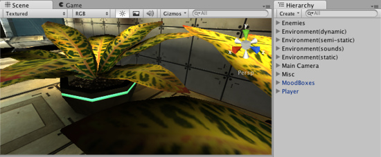
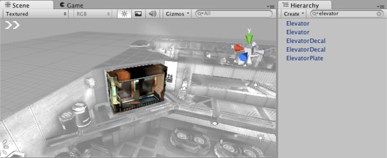
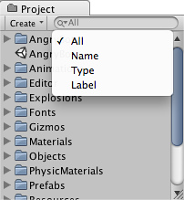

Searching
When working with large complex scenes it can be useful to search for specific objects. By using the Search feature in Unity, you can filter out only the object or group of objects that you want to see. You can search assets by their name, by Component type, and in some cases by asset Labels. You can specify the search mode by choosing from the Search drop-down menu.
Scene Search
When a scene is loaded in the Editor, you can see the objects in both the Scene View and the Hierarchy. The specific assets are shared in both places, so if you type in a search term (eg, "elevator"), you'll see the the filter applied both visually in the Scene View and a more typical manner in the Hierarchy. There is also no difference between typing the search term into the search field in the Scene View or the Hierachy -- the filter takes effect in both views in either case.

Scene View and Hierarchy with no search applied.
Scene View and Hierarchy with no search applied.

Scene View and Hierarchy with active filtering of search term.
Scene View and Hierarchy with active filtering of search term.
When a search term filter is active, the Hierarchy doesn't show hierarchical relationships between GameObjects, but you can select any GameObject, and it's hierarchical path in the scene will be shown at the bottom of the Hierarchy.

Click on a GameObject in the filtered list to see its hierarchical path.
When you want to clear the search filter, just click the small cross in the search field.
In the Scene search you can search either by Name or by Type. Click on the small magnifying glass in the search field to open the search drop-down menu and choose the search mode.

Search by Name, Type, or All.
Project Search
The same fundamentals apply to searching of assets in the Project View -- just type in your search term and you'll see all the relevant assets appear in the filter.
In the Project search you can search by Name or by Type as in the Scene search, and additionally you can search by Label. Click on the small magnifying glass in the search field to open the search drop-down menu and choose the search mode.

Search by Name, Type, Label, or All.
Object Picker Search
When assigning an object via the Object Picker, you can also enter a search term search to filter the objects you want to see.
Page last updated: 2011-11-10